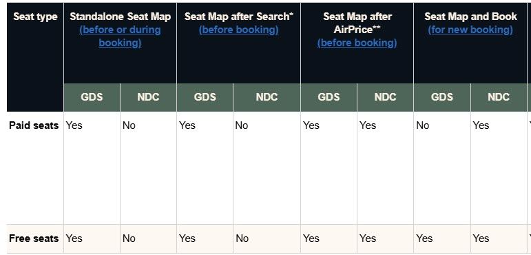
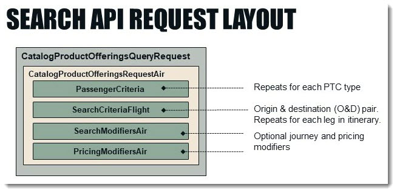
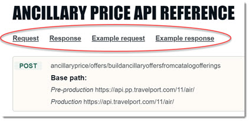
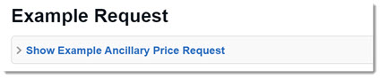
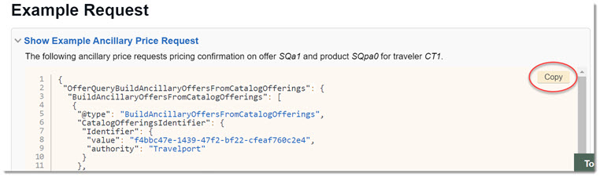
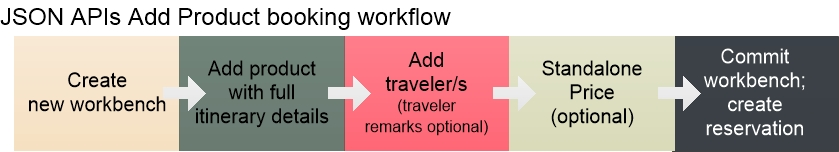

Using the Help
Information about the JSON APIs is available in this online help as either a guide, API reference, or workflow. You can also use searches to help find what you need.
In this topic:
Guides: Overview, Usage, and Capability Support
This online help provides a guide for all functional areas of using the JSON APIs to book and manage air travel. These include searching, pricing, booking, updating traveler details, and making exchanges. Open the Guides menu at the top of any page for a list, or click the Guides menu heading to see a full list.
Each guide provides a functional overview and basic usage information for the API/s in that area. Guides define basic concepts for that travel area, such as the difference between an itinerary, leg, and segment for travel by air. Guides also include the workflow diagrams detailed below.
Guides for capabilities with variable support in the JSON APIs provide a support table. For example, functionality may differ between NDC and GDS, and/or be supported only in specific workflows. The Seats support table excerpted below includes both scenarios.

Most guides also include layout diagrams illustrating the basic structure of the request and response payloads for that API. Layout diagrams provide a hierarchical view of the API's high-level objects.

API References: Technical Details and Examples
Every JSON API has an API reference. Open the API References menu at the top of any page for a list, or click the API References menu heading to see a full list by resource.
Each API reference is a full technical reference for the API. It provides object-level details including supported formats and values.
|
All API references provide the same navigation at the top of the page, as shown to the right. An API Reference always includes the following information in this order:
|
 |
To make it easier to navigate the page, reference tables and examples load in collapsed dropdown boxes like this:

Click the heading to expand and collapse the dropdown. Use the Copy button, circled below, to copy that example so you can paste it into your own Postman collection or other application.

Workflow Diagrams: API call sequences
The JSON APIs are linked together in workflows from air shopping through booking and ticketing, with optional calls along the way. Open the Workflows menu at the top of any page, or click the Workflows menu heading to see a full list. Workflow diagrams are also embedded in their associated guide.
Workflow diagrams provide a high-level overview of the entire travel booking flow, as well as individual processes that require multiple API calls, such as booking and ticketing. Diagrams can help you decide which workflow to implement in various scenarios.

Search Tips: Finding what you need
If you've checked the guide and the API reference for an API and/or its functional area without finding what you need, try a search at the top of any page:
All supported JSON objects are documented in the help. To search for technical details in the API reference, enter the exact object name; e.g., combinablilitycode instead of combinability code.
For terms, use quotation marks as needed, as in "carrier support". For example, "round trip" returns results with the phrase round trip. However, round trip without quotations returns all pages that have both words (round and trip) anywhere in the page.
The search is not case-sensitive, and you can enter partial words using at least four characters. Words with variant endings are returned in results. For example, a search for ticket returns topics with tickets, ticketing, and ticketed.
The search supports the following symbols and Boolean operators, which are not case-sensitive:
-
AND or plus (+) or ampersand (&) narrows the search to only topics that contain all of the words in the same topic but not necessarily together as a phrase.
-
OR a pipe (|) broadens the results by retrieving topics that contain any of the words it separates.
-
NOT a caret (^) finds topics that contain one term but not the other.
Key terms, notes, and warnings
Throughout the help, the following standard formatting presents the same types of information consistently.
Important concepts are highlighted in bold coral text like this:
In the JSON Search APIs, an offer is a product available at a specific price under a set of terms and conditions. A product is the flight or connecting flights for one leg of the itinerary, plus a service level that includes the cabin class and any fare codes that may apply.